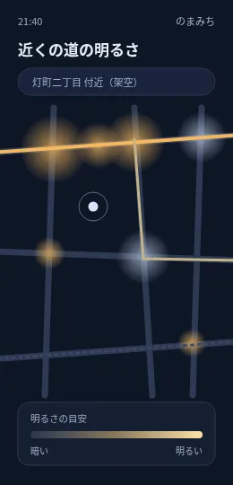
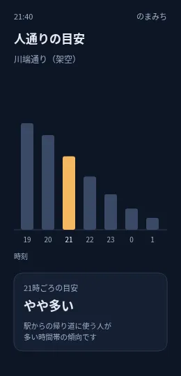
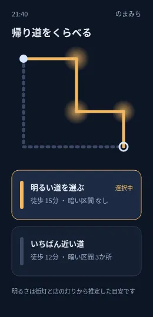

架空のアプリの紹介ページです。実在のストアでは配信していません。
暗い道を、
歩く前に知る。
のまみちは、夜道の明るさと人通りの目安を地図で見る、歩行者向けアプリです。徒歩や自転車で帰る道を、街灯と店の灯りの濃淡でくらべられます。
店の灯りあり。人通りは多め。
地図・駅名・通りの名前は架空です。
これは目安で、安全の保証ではありません
のまみちが塗る明るさは、街灯の位置と種類、店の営業時間から推定した濃淡です。人通りも、曜日と時間帯ごとの傾向から出した目安です。工事で街灯が消えている夜や、急に店が閉まった夜までは分かりません。地図は道を選ぶ手がかりのひとつとして使ってください。
使い方
開いて、行き先を置いて、道の明るさを見くらべる。歩いている間は画面を見続けなくてよいようにしています。
-
行き先を置く
地図を長押しするか、「家」「駅」など登録した場所から選びます。登録した場所は端末の中だけに残ります。
-
明るさの濃淡を見る
道は灯りの多さに応じて、暗い紺から街灯の色まで塗り分けられます。時刻をずらすと、店が閉まったあとの暗さも先に確かめられます。
-
道をくらべて歩く
いちばん近い道と、明るい道を並べて、かかる時間と暗い区間の数をくらべます。自転車のときは、車道沿いの灯りを優先して塗ります。
画面イメージ
夜に開くアプリなので、画面そのものも暗く、まぶしくならない色にしています。画面は開発中のイメージです。



位置情報の扱い
夜にどこを歩いているかは、とても個人的な情報です。のまみちは、それを手元から出さない設計を前提にしています。
架空のアプリのための仮の方針です。
- 現在地は端末の中で使う
- 経路の計算と明るさの表示は端末の中で行い、現在地をサーバーへ送らない想定です。
- 取得するのは使っている間だけ
- 位置情報の許可は「アプリの使用中のみ」。画面を閉じたあとに取りつづけることはしません。
- 歩いた道を残さない
- 歩いた経路の履歴は、既定では保存しません。残す設定にしても端末の中だけで、まとめて消せます。
- 人通りは、利用者の位置から作らない
- 人通りの目安は、ほかの利用者の位置を集めて作るのではなく、時間帯ごとの一般的な傾向と公開されている営業時間から推定します。
- アカウントはいらない
- メールアドレスや電話番号の登録なしで使えます。
対応OS
OS の名前はすべて架空の表記です。
| 端末 | OS（架空） | 内容 |
|---|---|---|
| スマートフォン | Lumina OS 15 以降 | 地図・時刻ずらし・経路くらべ |
| スマートフォン | Kairo 12 以降 | 地図・時刻ずらし・経路くらべ |
| 腕時計型 | Kairo Wear 4 以降 | 曲がり角を振動で知らせる簡易版（構想中） |
どの端末でも、位置情報（GPS）と画面を暗く保つ表示に対応していることが前提です。
ダウンロード案内
のまみちは架空のアプリです。下のボタンはデモで、押しても何もダウンロードされず、どのストアにも移動しません。